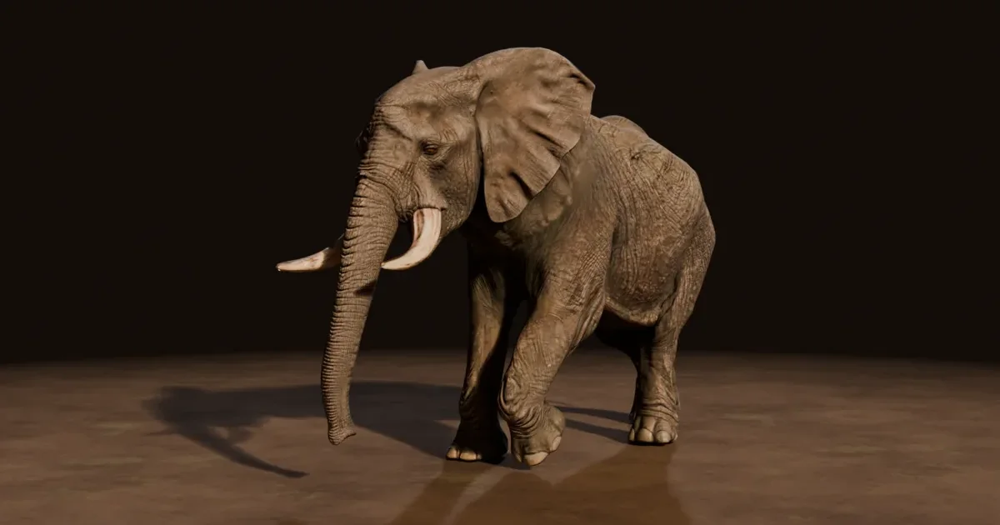
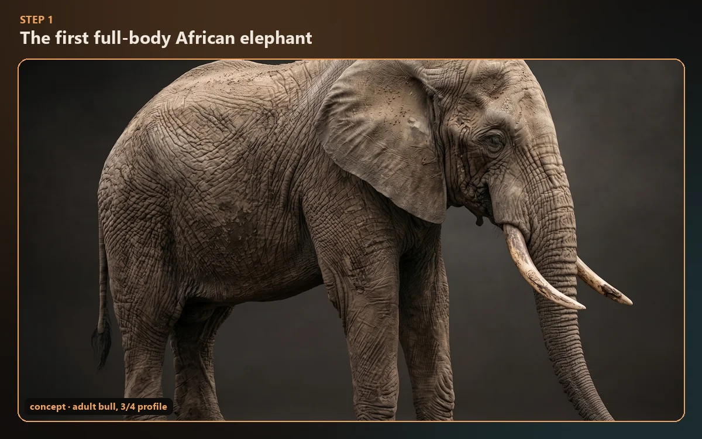
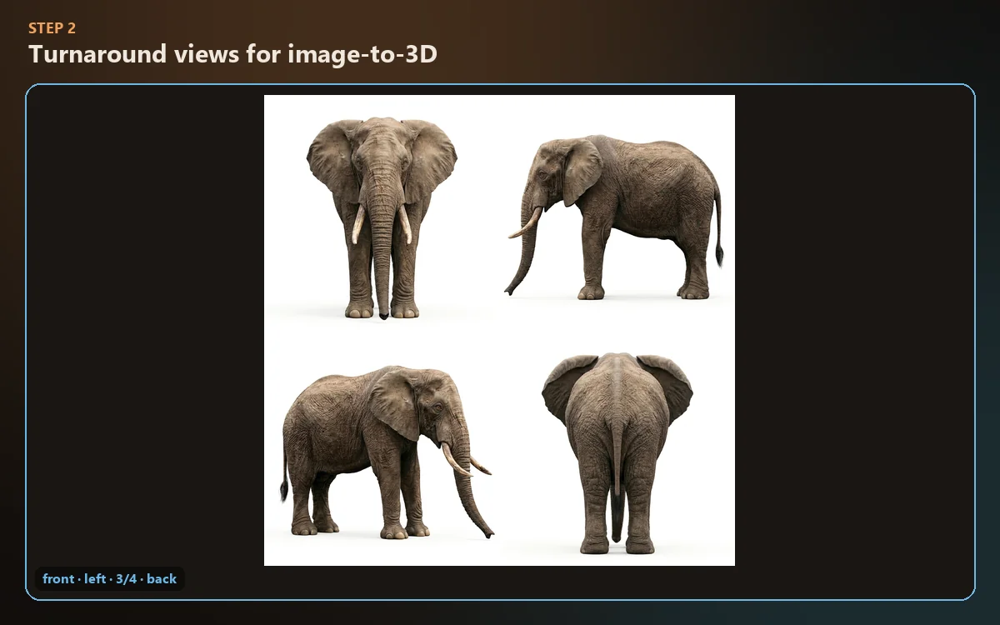
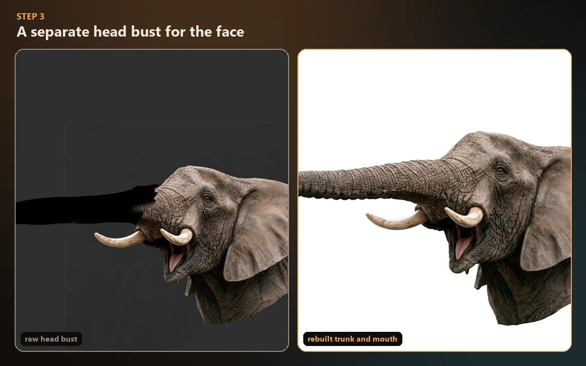
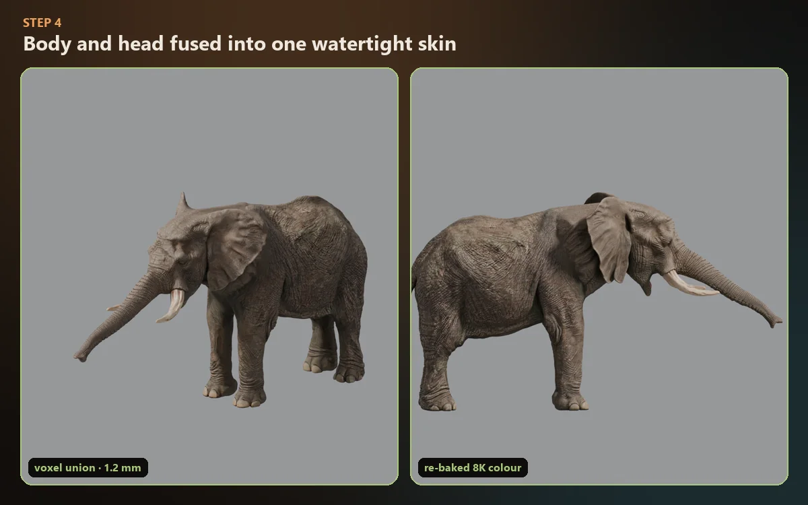
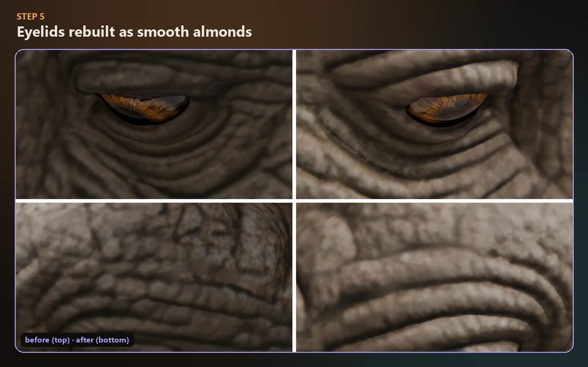
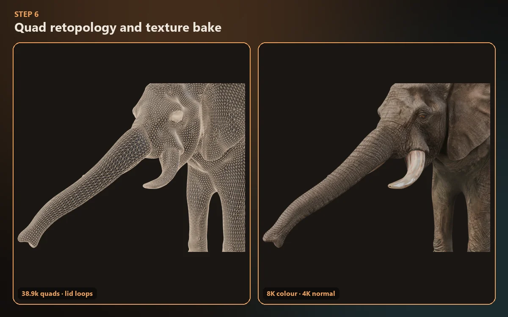
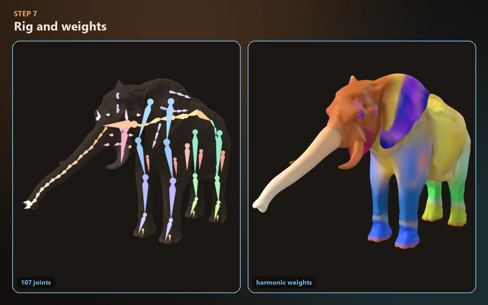
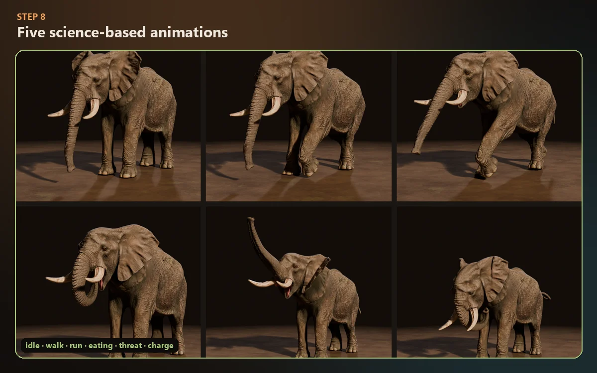

Free Blender model · CC BY 4.0
Rigged African Elephant Bull for Blender
An anatomically rigged African bush elephant (Loxodonta africana) with a 107-joint skeleton and five animations built from real elephant biomechanics. Made for animators, riggers and game developers by AnimalAnimator.com.
Includes a game-ready .glb for Unity, Unreal and Godot · Blender 5.1+
- 107anatomical joints
- 5science-based animations
- 85.7ktriangles
- 8KPBR skin texture
- 3.2 mreal shoulder height
Explore it in 3D
Turn the elephant around before you download
The interactive viewer plays all five animations. Drag to orbit, scroll to zoom, and pick a clip from the animation menu at the bottom.

Viewer by Sketchfab. Open the African Elephant Bull on Sketchfab.
5 science-based animations
Every clip comes from how real elephants move
Speeds, footfall timing, joint angles and behaviours come from published locomotion and behaviour studies. All clips run at 30 fps, in place, as seamless loops.
Idle: standing rest
The bull shifts his weight slowly from side to side and rests a hind foot on its toe. He gives two slow ear flaps, the way elephants dump heat through their ears. The trunk tip lifts and sniffs while its two fingers work. Tail swishes, blinks, a slow breath and a little chewing complete the loop.
Based on: Buss & Estes 1971; Phillips & Heath 1992 (ear flapping and heat exchange).
Walk: the lateral-sequence walk
Hind foot, then the fore foot on the same side, at about 1.25 m/s with a 1.8 s stride. The feet land slightly heel-first, roll over the pad and swing forward on smooth arcs with no sliding. In swing, the wrist flexes about 75°, so the front sole turns backward. The legs are compliant, so the back rocks less, the shoulder blades glide and the muscles bulge on every step.
Based on: Hutchinson et al. 2006; Ren et al. 2008, 2010; Genin et al. 2010.
Run: "grounded running"
Elephants never gallop and never leave the ground. At about 4 m/s (14 km/h) they keep four evenly spaced footfalls, but their legs bounce like springs. The hindquarters compress more than the forequarters, so the back rocks fore and aft while the centre of mass moves only about 1 cm. The head nods with each forefoot impact, and the ears flap with the stride.
Based on: Hutchinson et al. 2003, 2006; Ren & Hutchinson 2008; Genin et al. 2010.
Eating: grazing with trunk and foot
The trunk wraps its tip around a grass tuft while the right forefoot kicks it loose with the toenails, a typical elephant feeding move. After a twist and pull, the trunk curls from the tip and lifts the food in front of the lowered lip. It slides into the mouth between the tusks, then the bull chews with the elephant's fore-and-aft power stroke.
Every frame was checked for trunk–jaw and trunk–tusk intersections.
Threat display and charge
First the threat: head up, ears spread wide, trunk raised and a head shake that slaps the ears. Then a serious charge, with ears pinned, trunk curled under for protection and the tusks forward. Two driving forefoot steps and a lunge end in an upward tusk thrust, and the bull backs up to his start stance.
Based on: Poole & Granli 2011, ElephantVoices Elephant Ethogram; Poole 1987 (musth).
Inside the rig
107 joints that follow elephant anatomy
The skeleton follows elephant bones: a long thorax with tall withers, a short neck, a massive skull and columnar legs on fat-padded feet. Helper and soft-tissue joints keep the skin believable when the legs bend.
- Trunk · 18 joints16 segments that shorten toward the tip, plus the dorsal and ventral "fingers" of the African trunk.
- Ears · 20 jointsA hinge root and three fans of three segments on each side for flapping, spreading and pinning back.
- Face · 18 jointsJaw, 2-part tongue, pointed lower lip, mouth corners, cheeks, eyes, lids, brows and musth glands.
- Spine and neckPelvis root, four thoracolumbar and two cervical segments, skull, and a belly bone for breathing and sway.
- Columnar legsScapula, humerus, forearm and manus at the front; femur, tibia and pes at the back.
- 12 corrective jointsShoulder, elbow, carpus, hip, knee and tarsus, each driven at half its joint's angle to keep volume.
- 8 soft-tissue jointsTriceps and hamstrings that bulge and wobble, and four foot cushions that squash and spread.
- Tail · 8 jointsEight caudal segments for swishes, follow-through and the raised tail of the run.
From concept to animation
How the elephant was made
Eight steps took the bull from one concept image to a rigged, animated model. The full guide explains each one.

1 ConceptOne full-body image of an adult bull set the tusks, ears and skin folds.
2 TurnaroundFront, side, three-quarter and back views locked the proportions.
3 Head bustA separate high-detail head, with the trunk and mouth rebuilt.
4 One skinHead and body fused into one watertight skin; the colour re-baked across the seam.
5 EyelidsSmooth almond rims around the eyeballs for clean close-ups.
6 RetopologyQuad topology with loops around the eyes, 8K colour and 4K normal maps.
7 Rig and weights107 joints and harmonic skin weights, built with Python tools in Blender.
8 AnimationFive clips generated from locomotion and behaviour papers, checked frame by frame.
Download and use
From download to playing animation in a minute
- Download the
.blend(and the.glbif you need it) from the latest GitHub release. - Open it in Blender 5.1 or newer and press Space to play.
- Switch clips in Dope Sheet → Action Editor:
01_Idle,02_Walk,03_Run,04_Eating,05_Attack. - Add it to your scene with File → Append, then choose the elephant's collection or objects.
- Game engines: import the
.glb. The five clips arrive as named animations.
Technical specs
- Species
- African bush elephant bull, Loxodonta africana
- Files
.blend(Blender 5.1) and.glb(glTF 2.0)- Mesh
- About 85.7k triangles (body 77.8k, eyes 2 × 4.0k)
- Textures
- PBR metal/rough: 8K base colour, 4K normal, 4K roughness; 2K eyes
- Rig
- 107 joints, harmonic skin weights, max 4 per vertex
- Animations
- 5 clips, 30 fps, in place, seamless loops
- Scale
- Real size: 3.2 m at the shoulder, about 6 m long
- License
- CC BY 4.0, commercial use allowed
Free to use, with credit
Use it anywhere. Just credit AnimalAnimator.
The model is licensed under Creative Commons Attribution 4.0. You can use it in films, games, classes and client work, and you can change it. Please paste this credit, with the link, wherever you show your work.
African Elephant Bull 3D model by AnimalAnimator.com (https://animalanimator.com), licensed under CC BY 4.0
The full story on AnimalAnimator.com
The Ultimate African Elephant for Animal Animators
Elephant anatomy for riggers, trunk and foot science, gait data, species and ancestors, and the complete step-by-step build of this rig, with interactive tools and 50+ sources.
Read the guide →More animal references and rigging guides
FAQ
Questions about the elephant model
Is the rigged African elephant really free?
Yes. The Blender file and the GLB export are free to download under the Creative Commons Attribution 4.0 license. You only need to credit AnimalAnimator.com with a link.
Can I use the elephant in a commercial game or film?
Yes. CC BY 4.0 allows commercial use and changes, as long as you give credit. Use the credit line above.
Which Blender version do I need?
The file was made in Blender 5.1. Use Blender 5.1 or newer. For other software, use the included GLB file.
Does the elephant work in Unity, Unreal Engine or Godot?
Yes. Import the GLB file. The five animations come in as named clips, and the corrective and soft-tissue joints are baked into them, so the legs keep their volume in any engine.
Are the elephant animations based on real data?
Yes. The gait timing, speeds, duty factors, joint angles and behaviours come from published studies of African and Asian elephants, such as Hutchinson et al. 2003 and 2006, Ren et al. 2008 and 2010 and Genin et al. 2010. The elephant guide lists all the sources.